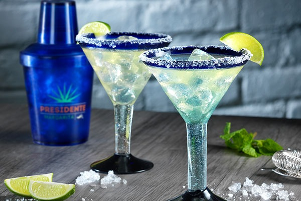

El alcohol tiene un papel importante en muchas culturas, siendo parte de rituales religiosos, celebraciones y reuniones sociales. Sin embargo, su consumo excesivo está asociado con problemas sociales como violencia, accidentes y deterioro de las relaciones personales.
En resumen, las bebidas alcohólicas tienen una rica historia y diversidad, pero es fundamental consumirlas con responsabilidad debido a los efectos que pueden tener en la salud y el bienestar.
Bebidas Fermentadas
El azúcar de la fruta o el grano utilizado en el proceso como uvas, manzanas, trigo, cebada, etc., se convierte en alcohol. Esta reacción química es posible cuando hay una presencia necesaria de levaduras.
El vino, el champán, el cava y la cerveza son las bebidas fermentadas más populares. También existe la sidra, vermut, sato, sake, pulque y tepache, entre otras
Licores
Los licores y cremas son bebidas que se elaboran mezclando frutas, especias aromáticas y azúcares con licores o crema de leche. Las bebidas más populares suelen ser las elaboradas con frutas y hierbas. Algunas bebidas tienen fines medicinales y el grado de alcohol suele variar, así como la bebida en sí.
Destilados
El proceso de destilación de estas bebidas alcohólicas se da llevando el líquido que se quiere destilar al punto de ebullición para separar el alcohol del resto del líquido. Una vez frío, el alcohol vuelve a condensarse y se obtiene una bebida con mayor contenido alcohólico.